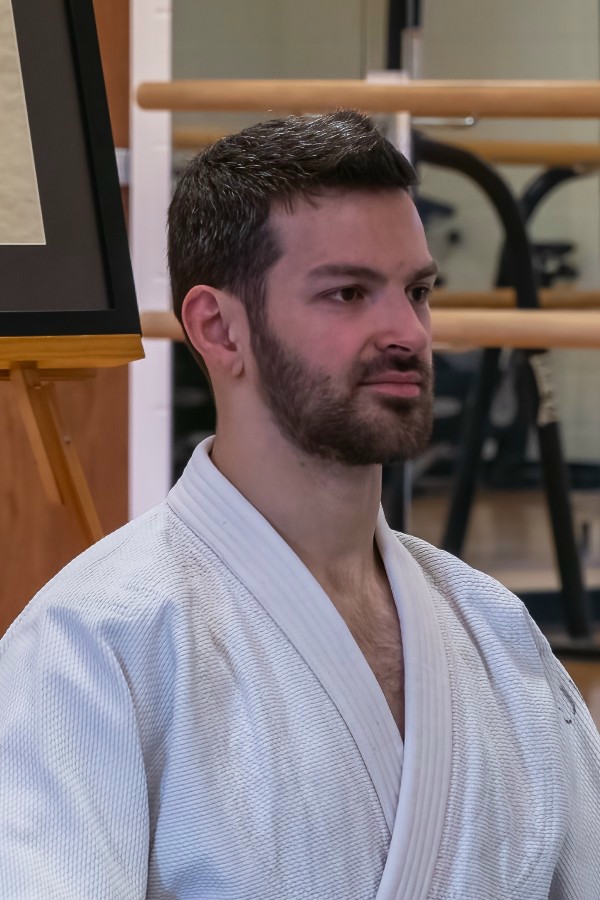

Bill Orwat sensei
Head InstructorRokudan (6th degree black belt), Shinshin Toitsu Aikido
Joden, Shinshin Toitsudo (Ki Development)
Bill was introduced to Ki-Aikido in 1978 in Philadelphia at an adult education program taught by Dr. Tsuyoshi Ohnishi, a student of Tohei sensei. Beginning in 1980, he studied with Terry Pierce sensei at the New Jersey Ki Society. At the Riverton, NJ dojo, Bill prepared numerous students, many from other schools, for their upcoming black belt tests. Presently, Bill serves as the Head Instructor of the Philadelphia Ki-Aikido program.
Bill has an MBA from Temple University, and he has worked in management for manufacturing companies for over 20 years. He now enjoys his retirement after working in logistics in the defense industry.

Kenneth Mills sensei
Assisstant Head InstructorNidan (2nd degree black belt), Shinshin Toitsu Aikido
Jokyu, Shinshin Toitsudo (Ki Development)
Kenneth began training Aikido at the Pennsylvania State University in 2012. He has been a student of Orwat sensei’s since his first class at Philadelphia Ki-Aikido in 2013. Kenneth has practiced several other martial arts, including American Kenpo and Brazilian Jiu-Jitsu, and presently trains concurrently in Judo. He currently serves as the Assistant Head Instructor at Philadelphia Ki-Aikido, supporting the dojo's mission of teaching Ki principles and Aikido techniques. His teaching emphasizes practical application of Ki in daily life and the development of Bodymind oneness through consistent practice.
Kenneth has a PhD in electrical engineering from Temple University and currently works as a research scientist developing remote sensing technologies.